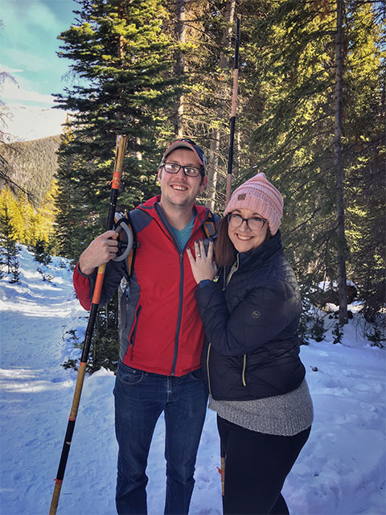
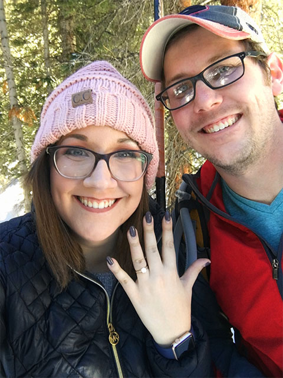
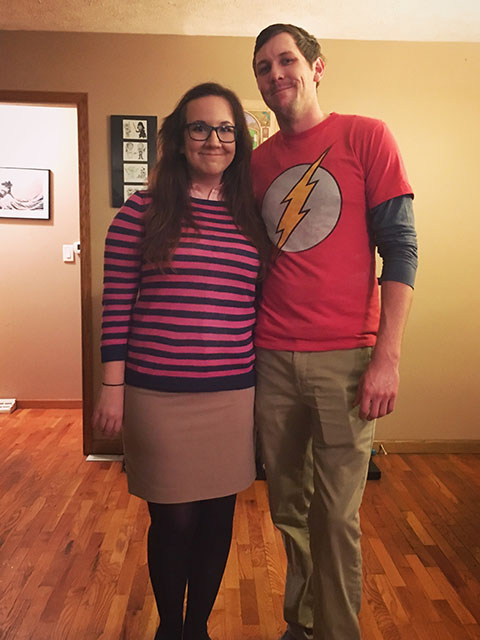
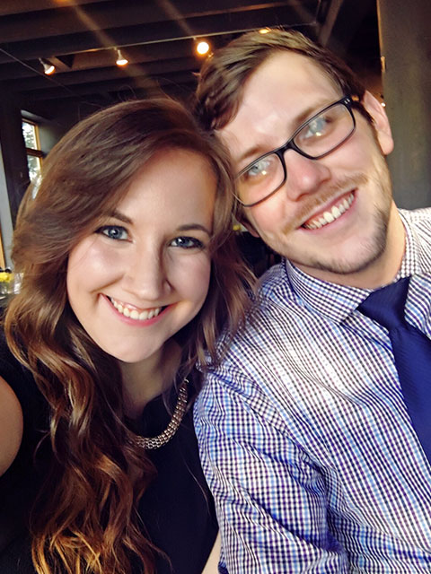
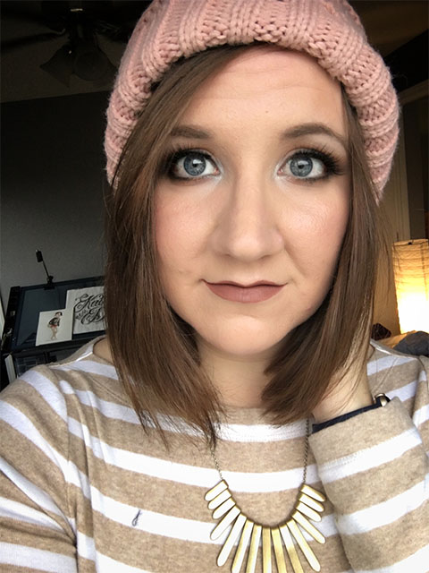
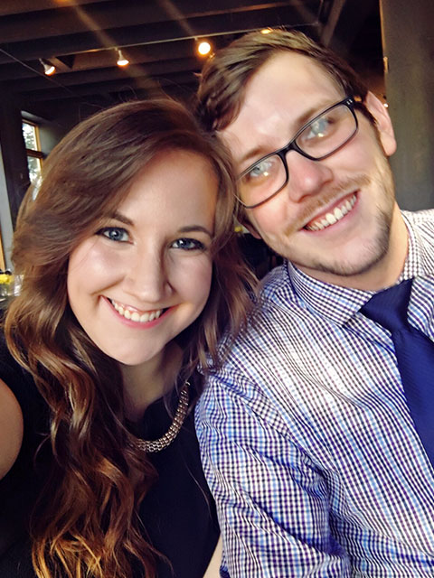
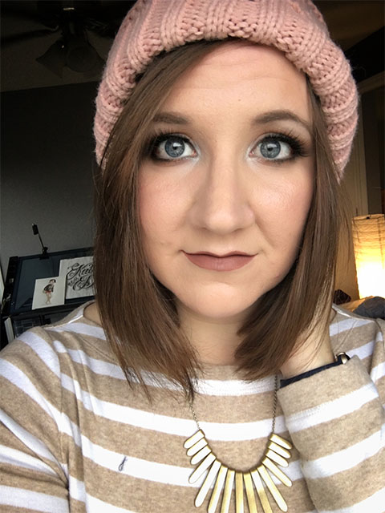

Biography of Dani Donovan
Dani is a Graphic Designer by day, bad jokes machine by night, Dani is a whirlwind of enthusiasm, energy, and an accidentally-sometimes-very-loud voice. Her interests range from art to football, Pokemon to high-end makeup, board games to beer Olympics. A fierce competitor, she strives for excellence in everything she attempts. She enjoys writing, cooking, Texas Hold 'Em, and teaching herself new skills. She also loves going on adventures with her Husband, taking massive amounts of pictures of her cats, and ordering tater-tot pizza and binge watching whatever her and her husband have decided is their “New Show”. Dani is an Omaha native, she has lived here most of her life (other than a short time in Phoenix we won’t talk about).
She went to Millard West High School, where she graduated with honors. Her whole high school career she aspired to be a Graphic Designer where she would join clubs just, so she could design their t-shirts. After graduation she attend University of Nebraska Kearney where she majored in Visual Communication and Design. She graduated from Kearney top of her class and with honors as well. She has worked as a designer now for 8 years, she started URS for her first internship, and later went to work at UNK Creative Services, Streck, and UNK Dining Services. After Graduating she worked full time for Fast Diet, then HDR, Daycloud Studios, One Night Brands (Her own freelance agency), and now a Senior Designer for Gallup. She now is working toward one day becoming an Art Director, and is super excited about the mentorships she is receiving at her new job.
  
 


